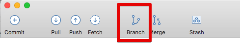
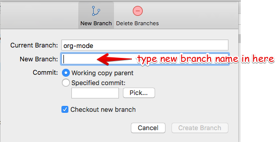

Printed Notes:
Keep these open in your browser
To make a new branch from an existing branch, click the "Branch" button:
In the dialog, enter the new branch name:
Leave the "Working copy parent" and "Checkout new branch" options selected.
Press then "Create Branch" button.
Rebasing is a complicated topic, it takes some time to understand what's going on.
It's like merging, except not exactly
Sadly, this is where SourceTree falls down